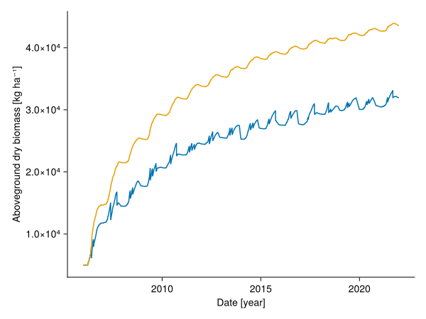

How to model heterogeneous site conditions or management
This tutorial assumes that you have read the basic tutorial How to prepare the input data to start a simulation. We will use an existing input object and change the number of patches to two and remove the management in the second patch.
import GrasslandTraitSim as sim
using Unitful
using Statistics
using CairoMakie
patch_xdim = 2
patch_ydim = 1
input_obj_prep = sim.validation_input(;
plotID = "HEG01", nspecies = 25,
trait_seed = 99);
# --------------- change the number of patches
simp_prep = Dict()
for k in keys(input_obj_prep.simp)
simp_prep[k] = input_obj_prep.simp[k]
end
simp_prep[:patch_xdim] = patch_xdim
simp_prep[:patch_ydim] = patch_ydim
simp_prep[:npatches] = patch_xdim * patch_ydim
simp_prep[:ts] = input_obj_prep.simp.ts
simp = NamedTuple(simp_prep)
# --------------- change the management
daily_input_prep = Dict()
for k in keys(input_obj_prep.input)
daily_input_prep[k] = input_obj_prep.input[k]
end
mowing_prep = daily_input_prep[:CUT_mowing]
CUT_mowing = fill(NaN * u"m", length(mowing_prep), patch_xdim, patch_ydim)
CUT_mowing[:, 1, 1] .= mowing_prep
grazing_prep = daily_input_prep[:LD_grazing]
LD_grazing = fill(NaN / u"ha", length(grazing_prep), patch_xdim, patch_ydim)
LD_grazing[:, 1, 1] .= grazing_prep
daily_input_prep[:CUT_mowing] = CUT_mowing
daily_input_prep[:LD_grazing] = LD_grazing
input = NamedTuple(daily_input_prep)
# --------------- add everything together
input_obj = (; input, simp, site = input_obj_prep.site)(input = (PET = Unitful.Quantity{Float64, 𝐋, Unitful.FreeUnits{(mm,), 𝐋, nothing}}[0.1 mm, 0.2 mm, 0.1 mm, 0.0 mm, 0.2 mm, 0.0 mm, 0.1 mm, 0.0 mm, 0.0 mm, 0.0 mm … 0.0 mm, 0.0 mm, 0.1 mm, 0.9 mm, 0.0 mm, 0.0 mm, 0.1 mm, 0.1 mm, 0.2 mm, 0.6 mm], PET_sum = Unitful.Quantity{Float64, 𝐋, Unitful.FreeUnits{(mm,), 𝐋, nothing}}[0.1 mm, 0.2 mm, 0.1 mm, 0.0 mm, 0.2 mm, 0.0 mm, 0.1 mm, 0.0 mm, 0.0 mm, 0.0 mm … 0.0 mm, 0.0 mm, 0.1 mm, 0.9 mm, 0.0 mm, 0.0 mm, 0.1 mm, 0.1 mm, 0.2 mm, 0.6 mm], temperature = Unitful.Quantity{Float64, 𝚯, Unitful.FreeUnits{(K,), 𝚯, Unitful.Affine{-5463//20}}}[3.2 °C, 0.2 °C, 1.1 °C, -0.7 °C, 0.1 °C, -0.7 °C, -0.5 °C, -2.1 °C, -6.2 °C, -4.2 °C … -3.8 °C, -5.8 °C, -1.5 °C, 6.0 °C, -4.6 °C, -7.8 °C, -1.0 °C, 4.9 °C, 6.8 °C, 11.1 °C], LD_grazing = Unitful.Quantity{Float64, 𝐋^-2, Unitful.FreeUnits{(ha^-1,), 𝐋^-2, nothing}}[NaN ha^-1 NaN ha^-1; NaN ha^-1 NaN ha^-1; … ; NaN ha^-1 NaN ha^-1; NaN ha^-1 NaN ha^-1;;;], temperature_sum = Unitful.Quantity{Float64, 𝚯, Unitful.FreeUnits{(K,), 𝚯, nothing}}[3.2 K, 3.4000000000000004 K, 4.5 K, 4.5 K, 4.6000000000000005 K, 4.6000000000000005 K, 4.6000000000000005 K, 4.6000000000000005 K, 4.6000000000000005 K, 4.6000000000000005 K … 3350.4999999999986 K, 3350.4999999999986 K, 3350.4999999999986 K, 3356.4999999999986 K, 3356.4999999999986 K, 3356.4999999999986 K, 3356.4999999999986 K, 3361.3999999999987 K, 3368.199999999999 K, 3379.299999999999 K], precipitation = Unitful.Quantity{Float64, 𝐋, Unitful.FreeUnits{(mm,), 𝐋, nothing}}[0.0 mm, 0.3 mm, 0.0 mm, 0.0 mm, 0.0 mm, 0.0 mm, 0.0 mm, 0.0 mm, 0.0 mm, 0.0 mm … 0.0 mm, 0.0 mm, 0.8 mm, 1.1 mm, 1.2 mm, 0.0 mm, 0.8 mm, 1.6 mm, 1.3 mm, 0.0 mm], PAR = Unitful.Quantity{Float64, 𝐌 𝐓^-2, Unitful.FreeUnits{(ha^-1, MJ), 𝐌 𝐓^-2, nothing}}[8540.0 MJ ha^-1, 7860.0 MJ ha^-1, 5350.0 MJ ha^-1, 4700.0 MJ ha^-1, 2150.0 MJ ha^-1, 1650.0 MJ ha^-1, 2460.0 MJ ha^-1, 7990.0 MJ ha^-1, 9570.0 MJ ha^-1, 10000.0 MJ ha^-1 … 15970.0 MJ ha^-1, 11359.999999999998 MJ ha^-1, 2039.9999999999998 MJ ha^-1, 2039.9999999999998 MJ ha^-1, 3220.0 MJ ha^-1, 2380.0 MJ ha^-1, 2849.9999999999995 MJ ha^-1, 5010.0 MJ ha^-1, 3770.0 MJ ha^-1, 9010.0 MJ ha^-1], PAR_sum = Unitful.Quantity{Float64, 𝐌 𝐓^-2, Unitful.FreeUnits{(ha^-1, MJ), 𝐌 𝐓^-2, nothing}}[8540.0 MJ ha^-1, 7860.0 MJ ha^-1, 5350.0 MJ ha^-1, 4700.0 MJ ha^-1, 2150.0 MJ ha^-1, 1650.0 MJ ha^-1, 2460.0 MJ ha^-1, 7990.0 MJ ha^-1, 9570.0 MJ ha^-1, 10000.0 MJ ha^-1 … 15970.0 MJ ha^-1, 11359.999999999998 MJ ha^-1, 2039.9999999999998 MJ ha^-1, 2039.9999999999998 MJ ha^-1, 3220.0 MJ ha^-1, 2380.0 MJ ha^-1, 2849.9999999999995 MJ ha^-1, 5010.0 MJ ha^-1, 3770.0 MJ ha^-1, 9010.0 MJ ha^-1], CUT_mowing = Unitful.Quantity{Float64, 𝐋, Unitful.FreeUnits{(m,), 𝐋, nothing}}[NaN m NaN m; NaN m NaN m; … ; NaN m NaN m; NaN m NaN m;;;]), simp = (trait_seed = 99, output_date = Dates.Date("2006-01-01"):Dates.Day(1):Dates.Date("2021-12-31"), mean_input_date_num = [2006.0, 2006.0027397260274, 2006.0054794520547, 2006.0082191780823, 2006.0109589041097, 2006.013698630137, 2006.0164383561644, 2006.0191780821917, 2006.021917808219, 2006.0246575342467 … 2021.9698630136986, 2021.972602739726, 2021.9753424657533, 2021.978082191781, 2021.9808219178083, 2021.9835616438356, 2021.986301369863, 2021.9890410958903, 2021.9917808219177, 2021.9945205479453], patch_ydim = 1, ntimesteps = 5843, nutheterog = 0.0, nspecies = 25, plotID = "HEG01", ts = Base.OneTo(5843), patch_xdim = 2, npatches = 2, likelihood_included = (biomass = true, trait = true, height = true, fdis = true), included = (senescence = true, senescence_season = true, potential_growth = true, clonalgrowth = true, mowing = true, grazing = true, lowbiomass_avoidance = true, belowground_competition = true, community_height_red = true, height_competition = true, sla_transpiration = true, sla_water_growth_reducer = true, rsa_water_growth_reducer = true, water_growth_reduction = true, nutrient_growth_reduction = true, root_invest = true, temperature_growth_reduction = true, seasonal_growth_adjustment = true, radiation_growth_reduction = true), output_date_num = [2006.0, 2006.0027397260274, 2006.0054794520547, 2006.0082191780823, 2006.0109589041097, 2006.013698630137, 2006.0164383561644, 2006.0191780821917, 2006.021917808219, 2006.0246575342467 … 2021.972602739726, 2021.9753424657533, 2021.978082191781, 2021.9808219178083, 2021.9835616438356, 2021.986301369863, 2021.9890410958903, 2021.9917808219177, 2021.9945205479453, 2021.9972602739726], mean_input_date = [Dates.Date("2006-01-01"), Dates.Date("2006-01-02"), Dates.Date("2006-01-03"), Dates.Date("2006-01-04"), Dates.Date("2006-01-05"), Dates.Date("2006-01-06"), Dates.Date("2006-01-07"), Dates.Date("2006-01-08"), Dates.Date("2006-01-09"), Dates.Date("2006-01-10") … Dates.Date("2021-12-21"), Dates.Date("2021-12-22"), Dates.Date("2021-12-23"), Dates.Date("2021-12-24"), Dates.Date("2021-12-25"), Dates.Date("2021-12-26"), Dates.Date("2021-12-27"), Dates.Date("2021-12-28"), Dates.Date("2021-12-29"), Dates.Date("2021-12-30")], time_step_days = Dates.Day(1)), site = (initbiomass = 5000.0 kg ha^-1, initsoilwater = 180.0 mm, totalN = 5.29 g kg^-1, clay = 0.502, silt = 0.447, sand = 0.05, organic = 0.05608, bulk = 0.68 g cm^-3, rootdepth = 160.0 mm))p = sim.SimulationParameter()
sol = sim.solve_prob(; input_obj, p);
patch_biomass = dropdims(sum(sol.output.biomass; dims = :species); dims = :species)
begin
fig = Figure()
Axis(fig[1, 1];
ylabel = "Aboveground dry biomass [kg ha⁻¹]",
xlabel = "Date [year]")
for x in Base.OneTo(patch_xdim)
for y in Base.OneTo(patch_ydim)
lines!(sol.simp.output_date_num, vec(ustrip.(patch_biomass[:, x, y]));)
end
end
fig
end